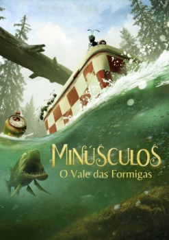

Minúsculos: O Filme (2013)


An Epic Adventure At Ground Level

Avaliação (TMDb):


6.9/10 (297 votos)
Avaliação (Usuário):
Outro Título:Minuscule - La vallée des fourmis perdues (Título Original)
País:Belgium, 89 minutos
Idiomas falados:
Gênero(s):Animação, Aventura, Família
Diretor(s):Hélène Giraud, Thomas Szabo
Codec:MPEG-2 (DVD)
Número: 698
Sinopse:
Em uma pacífica clareira, entre as sobras de um piquenique, começa uma batalha entre duas tribos de formigas em busca de uma caixa de açúcar. Uma jovem e corajosa joaninha acaba sendo capturada no meio do fogo cruzado e torna-se aliada das formigas negras, ajudando na luta contra as terríveis formigas vermelhas.
Elenco:
Tipo de mídia: DVD5,
Alugado: Não
Tela: 2.35:1